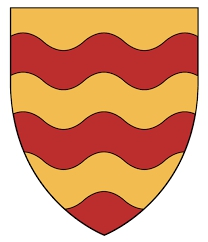

Antavla
48071331 Countess Isabel of Menteith
Grevinna av Menteith. Blev högst 54 år.

Far:
Muireadhack II of Menteith (- <1234)
Född:
1217.
Död:
1271.
Barn med
48071330 Lord Walter Comyn of Badenoch (1190 - 1258)
Barn:
Isabel Comyn
Personhistoria
Årtal
Ålder
Händelse
1217
Födelse 1217
1231?
Barnbarnet
12017832 Sir Archibald Mure of Rowallan
föds omkring 1231 Rowallan castle, Scotland
[1]
1258
Partnern
48071330 Lord Walter Comyn of Badenoch
dör 1258
1271
Död 1271
Källor
[1]
wikitree